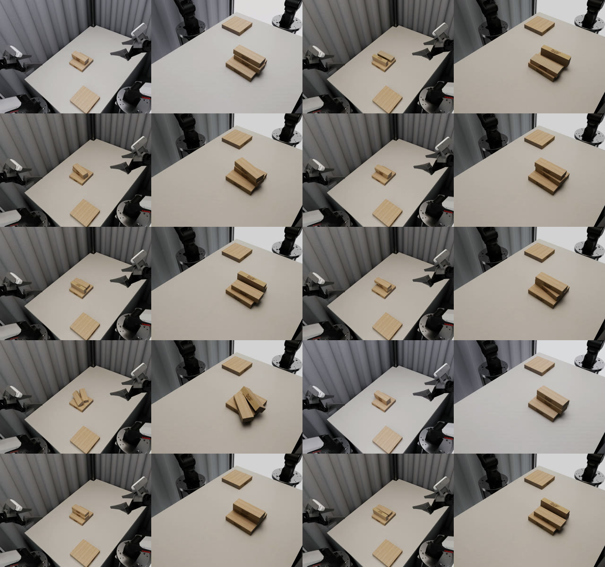
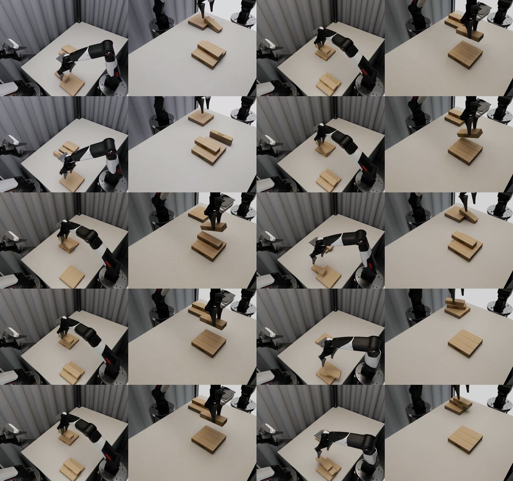

TOWER 挑战赛 Task3-2（task3-2_vertical_stacking_2，10 Hz），两个策略各在官网仿真中跑 10 次，每次 210 秒。
下面是两组的成绩、各自 10 次结束时刻的汇总截图，以及全部 20 条四路相机录像。
| 策略 | TSR任务成功率 ↑ | GSR抓取成功率 ↑ | PSR放置成功率 ↑ | LHPR长程进度率 ↑ | ODR扰动率 ↓ |
|---|---|---|---|---|---|
| G15000events-hold100 | 0.00 | 1.00 | 0.10 | 0.55 | 0.031 |
| ACT | 0.00 | 0.65 | 0.05 | 0.35 | 0.042 |
ODR 指非目标积木被碰动（中心位移超过 10 mm）的比例，越低越好。绿色为两组中较好的一方；两组 TSR 都是 0，即没有一次完成整个堆叠。

